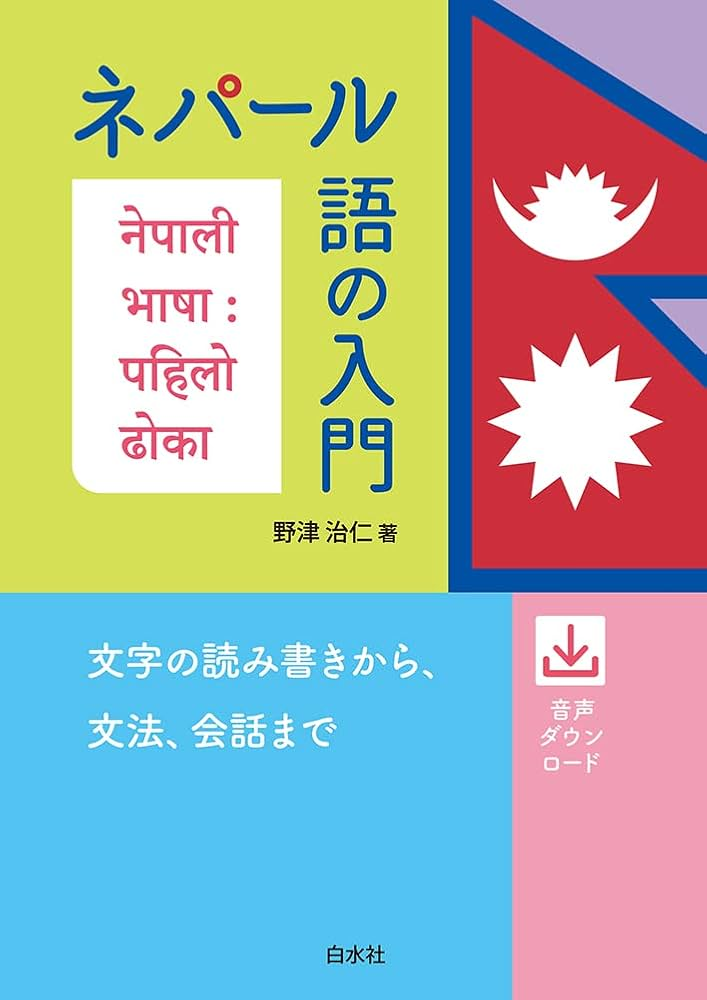

ネパール語教室
ネパール語教室受講生の皆さん
ネパール語教室へようこそ！
これから一緒に、楽しくネパール語を学んでいきましょう。
文字の読み方から簡単な日常会話まで、ゆっくり・無理なくステップアップしていきます。
わからないことがあれば、いつでも気軽にどうぞ。
レッスン日程
| 曜日 | 時間 | 場所 |
|---|---|---|
| 毎週土曜日 | 14:30〜16:00 | 4階 第1会議室 |
目標
8ヶ月でネパール語の基本的な読み書きと簡単な会話ができるようになることを目標とします。 数字や日付、時間の表現を理解し、簡単なやり取りができるようにします。 また、ポスターやチラシの内容を理解し、自分で簡単なチラシやポスターを作れるようになることを目指します。
持ち物
- ノート(テーストで書いてもらったことを家でチェックしたいのでルーズリーフも持参してもらうと便利)
- 筆記用具
使用図書
野津治仁 著『ネパール語の入門』白水社

関連リンク
福岡よかトピア国際交流財団「みんなの掲示板
みんなの掲示板はこちら